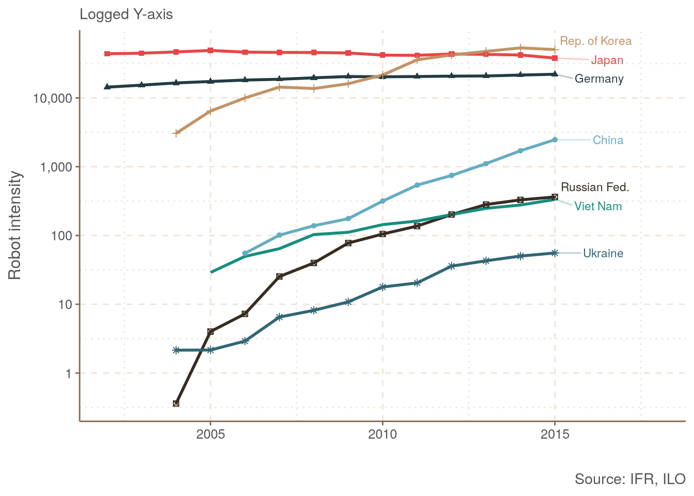
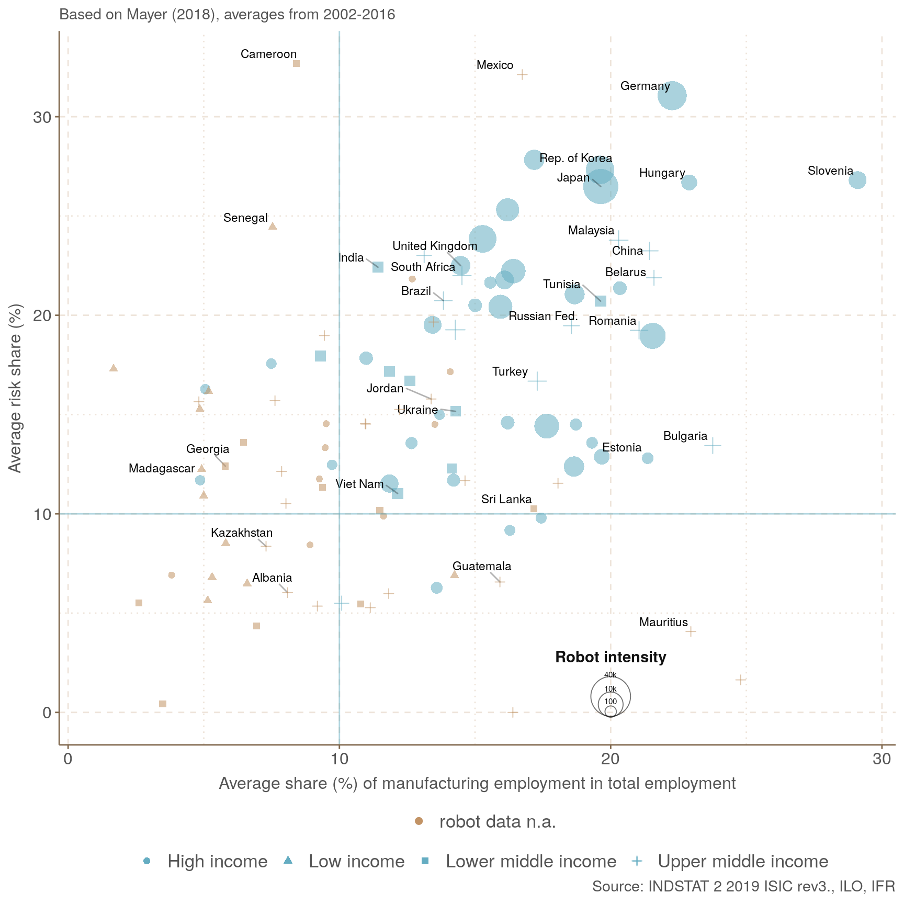
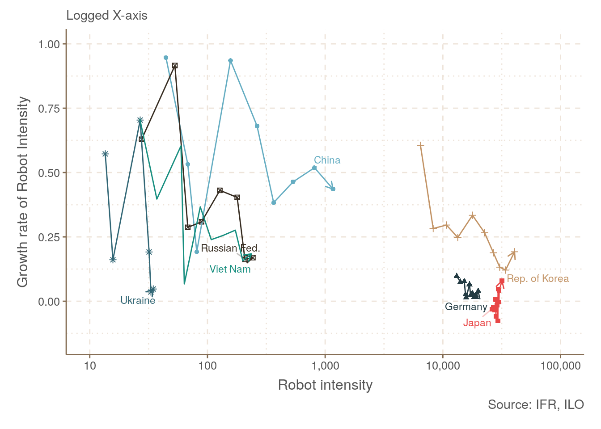

B Employment data from the International Labour Organisation (ILO)
In this tool we use employment data from UNs INDSTAT database. Alternatively, for countries’ total manufacturing employment and total employment, the reader can alternatively look at ILOs employment data (ILO 2019).
This would affect indicators 3.9 and 3.12 as well as graphs 5.1, 5.5 and 5.6.

Figure B.1: Robot intensity: robots per 1 Mio. manufacturing employees

Figure B.2: Vulnerability to robot-based automation

Figure B.3: Maturity effect of automation
Using ILO employment data instead of INDSTAT does not change the overall results qualitatively.
References
ILO. 2019. “International Labour Organization: ILOSTAT.” https://ilostat.ilo.org.